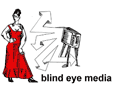

|
deflective
video science Below you will find some of the principles of human vision that we employed to make the "exoptic fields" video viewers' deflect attention from the screen.
|
 |
|
| summary
of visual perception disciplines: Vision is the primary sensory function in primates and humans. Our visual perception of the world depends on complex patterns of stimulation. There are three main areas of scientific research dedicated to understanding vision: First, visual optics, the mechanics of how the eye receives light and the nature of visual stimuli. Second, visual neurophysiology, or how the brain interprets visual inputs to construct a unified visual image. And finally, visual attention, an area of psychology that describes both the properties of the image and the expectations and goals of the observer that determine the attention given to a perceptual episode. |
||
| 1-
colors choice in "exoptic fields" The eye and its lens catch and focus light onto the receptor cells of the back of the eye, the retina. The perception of colors starts at the very center of the retina, in the fovea. The different frequencies and intensities of light captured at a particular point of the |
||
 |
retina are transformed into neuronal signals by the photoreceptors. They are of two types, the cones and the rods, but only the cones mediate diurnal and high acuity color vision. The cones alone occupy the center of the retina. The cones and rods are made up of different photopigments. These are red, green or blue, according to the light frequency they can capture. Their repartition in the retina is well-described. The red and green cones are localized in the center, with around the less numerous blue cones organized into a ring (see diagram I). These findings imply that the light frequency that reflects the object observed will influence the way we need to focus on this object. Thus, the "exoptic fields" video has adapted its color scheme, blue and yellowish tones, to target the most peripheral photoreceptors. 2- lines
and motions in "exoptic fields" |
|
|
At that point the visual inputs are separated into different components that are analyzed locally in specialized regions of the cortex. The identification of an object as well as its spatial position will derive from this analysis (Zeki, 2000). The visual system is most sensitive to well contrasted colors, sharply defined contours and oriented edges (Wade, 1991). To lure the eyes away from the center of interest, we based our approach on opposite characteristics, i.e. smooth contours, blurred lines, undefined shapes forming an horizontal undulating surface that move toward the edges of the screen. Advertisers have extensively used the fact that fast and sudden motions of the object(s) of interest converging to the center of the TV capture the movements of our eyes and our undivided attention (Hillstrom and Yantis, 1994; Egeth and Yantis, 1997; Corbetta and Shulman, 1998). The "exoptic fields" video has therefore refined all movement to create very slowly undulating contours and colors that withdraw to the edges of the screen. 3-
psychology of figurative element, the brick wall, in "exoptic fields"
bibliography
Egeth, H. E., and Yantis S., Visual attention: Control, representation, and time course, Ann. Rev. Psychol., 1997, 48:269-97. Hilltrom A. P., and Yantis S., Visual perception and attentionnal capture, Percept. Psychophys., 1994, 55(4):399-411. Hoffman, D. D., Visual intelligence: How we create what we see. Norton, 2000. Wade, N., An introduction: visual perception, Michael Swanston, N.Y. & London, Routledge, 1991. Zeki, S., An exploration of art and the brain, Oxford University Press, 2000. |
||
© blind eye media, llc